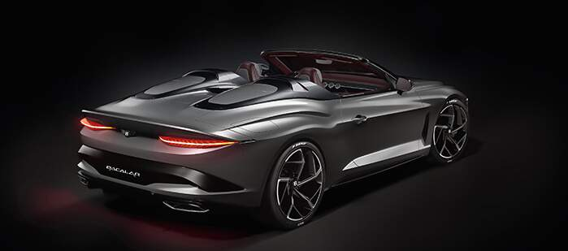
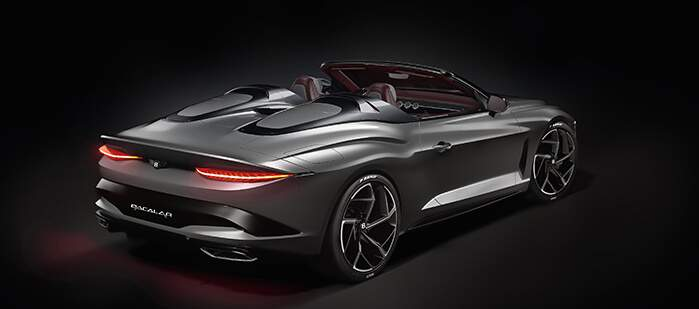
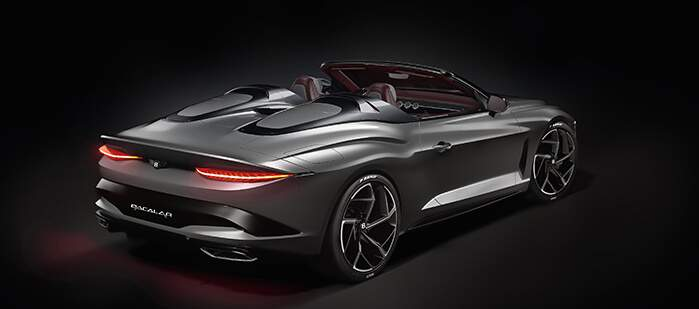
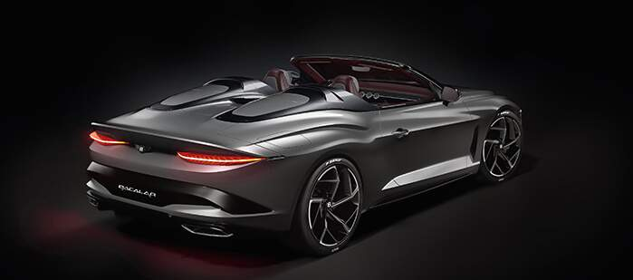

| Full Name: | weight: | stock availability: | barcode: | Price: |
|---|---|---|---|---|
| Bentley Bacalar | 1,815 kg | available in yellow,green,double blue,grey | 335150080018 | R29,824,205.00 |
.Built on the underpinnings of the Continental GT Speed Convertible but has a totally unique body - and it is the first two-seat Bentley in nine decades.
.The Bentley Bacalar was built by the 40 artisans who at the brand's Mulliner program at its Crewe, England headquarters.